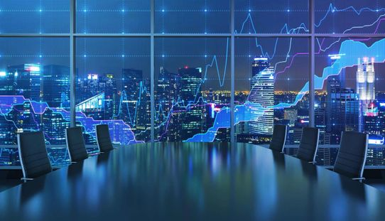
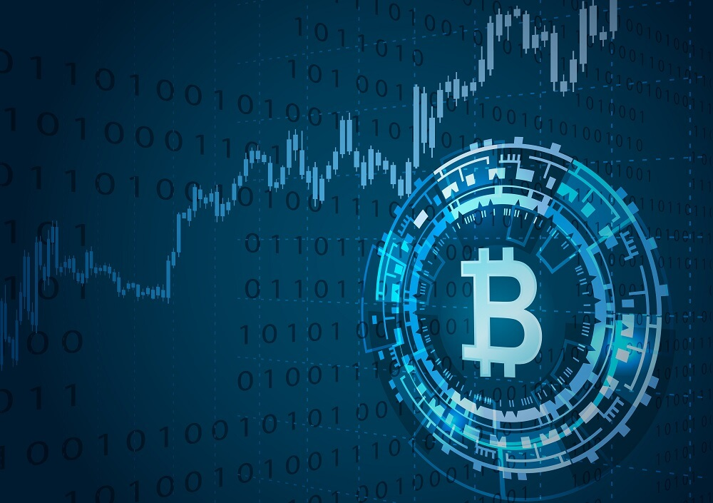

05/12/2017
The new solutions for crypto miners keep coming up to the market and Asia Trade Group Ltd keeps an eye on the latest news about the devices that can potentially increase the efficiency from the mining process. One of these projects that have attracted Asia Trade Group Ltd attention is the project called Camino. This company has created a high-tech liquid-cooled device for heating the house, which at the same time mines the crypto currency (it is extracted with the help of computing power). Comino is a professional mining device supporting multiple hashing algorithms which is perfect for mining ETH and other cryptocurrencies. It is compromised of 8 high-end graphic cards assembled together in a sleek case and adjusted for the highest mining efficiency. Asia Trade Group Ltd has contacted the team of Comino project to study more information about the product, its features and the perspective of investment opportunities. The Comino project seems to be very promising in the long-term perspective, especially when the statistic proves not only the demand for the new solutions for mining purposes, but the number of miners, which keeps increasing constantly.
25/11/2017
Nowadays the companies cannot deny the attractiveness of cryptocurrencies as a strategic investment opportunity. Some cryptocurrencies are accepted as the payment by some states and more and more companies are already involved in business and currently are integrating cryptocurrencies along with the bank transactions. Nevertheless, such new features as the smart contracts, high-speed transactions, decentralized system and low fees make the idea of entering the market of cryptocurrencies very attractive to Asia Trade Group Ltd as a promising sector to invest in. However, due to the fact that the number of existing cryptocurrencies has reached 1300 in November 2017, such projects have to be thoroughly analyzed for potential risks. Therefore, Asia Trade Group Ltd has chosen several projects as the potential investment options to get started with.
AGAM is one of the projects, that Asia Trade Group Ltd is mostly interested in. After the conference conducted in Dubai, Asia Trade got interested in the product and the way the business is done by AGAM. As it was announced in the online conference in Madrid, the first step which has to be done is the conduction of the due diligence process. Yesterday, the letter with the list of requested documents was sent by lawyers to AGAM to check the economic sustainability, its financial viability and legal side of the business. Based on the result of this procedure, Asia Trade Group Ltd will have a clear understanding, whether the project AGAM matches all the requirements and is of interest from the investment perspective.
14/11/2017
The company AsiaTrade carries out business activities in the field of investment participation on various projects and management of these projects.AsiaTrade’s priority is to analyze global markets and explore most potential and promising projects. One of the recent company’s interest is Atlantic Global Asset Management (AGAM).
This week, we were invited by Atlantic Global Asset Management to the on-line conference in Madrid. We would like to state that the announcement made by Atlantic Global Asset Management regarding our purchase was misleading. We officially claim that AsiaTrade has not been involved partially or fully in purchasing AGAM group. Any information leading to our purchase is not evidence- based and therefore, could not be considered relevant at any point. At this moment, we are looking for cooperation to evaluate potentially interesting and promising assets, therefore, any speculations regarding our future purchases could not be considered relevant before the official announcement by the company.
Regarding AGAM, AsiaTrade confirms its interest in this company that specializes in cryptocurrency field and has a large experience in crypto economy sector. Therefore now, Due diligence procedures have to take place in order to evaluate the company, assess key financial and working aspects. We would like to emphasize on the importance of this procedure: we want to be sure and moreover know that this is indeed the direction our financial institution is heading to. Due diligence will help our company to come up with a balanced and right decision, however we would like to add that we are open for discussions regarding future collaboration.
Don’t forget to regularly check our news section to stay always tuned and updated with latest news.
02/11/2017
Bitcoin is said to be the preferred payment system. However, the community has a few issues to sort out before consumers will be comfortable putting their money in the digital currency. The security is one of the main serious doubts which prevents the users from choosing one particular exchange platform or another. Asia Trade Group Ltd has decided to examine the project 100BTC to determine the viability of an idea, such as ensuring a project is legally and technically feasible as well as economically justifiable. The carried-out analysis will tell us whether a project is a strong basis for investments. In the field of e-currency exchange, the service 100btc.pro has been operating for more than a year. The work is structured in such a way that the exchange process takes place automatically 24 hours a day. This means that you can go to the website any time and easily exchange one currency for another. The site is very simple to use; its interface allows you to intuitively understand how to make a transaction for even the most inexperienced Internet user. 100btc.pro provides a convenient function of exchanging e-currencies for cash. Therefore, Asia Trade Ltd is particulary interested in maintaining positive relations with 100BTC project.
18/10/2017
Even though the majority of the world population does not have a clue about what cryptocurrency is, the advantage of quick and low fee transactions is undeniable. Bitcoin is a global system; it can go everywhere regardless of geography. However, since the world is not ready to fully accept Bitcoin payments, a simple and trustworthy system is needed to make transactions from Bitcoin wallets to the bank or PayPal accounts, which is, sometimes, not that easy to do. Loadoo is designed to withdraw money from the Bitcoin wallet and PayPal account to any physical or virtual bank card. This functional facilitates the cashing of small amounts of crypto currency for calculation by them at terminal locations. Asia Trade Group Ltd looks forward to evaluate the project’s potential for success; therefore, perceived objectivity is an important factor in the credibility of the study for potential investors and lending institutions. This is the reason, why Asia Trade Group Ltd has contacted the team of Loadoo project regarding a possibility of investment into the project. Asia Trade Group Ltd is discussing the possible further steps that can be taken to ensure potential cooperation in the future.